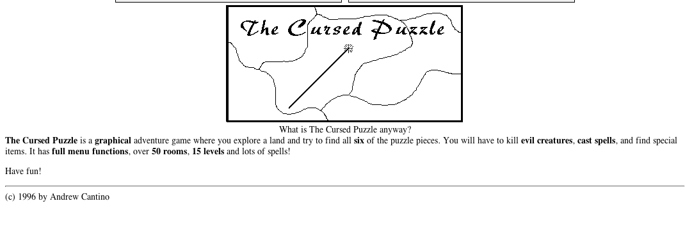
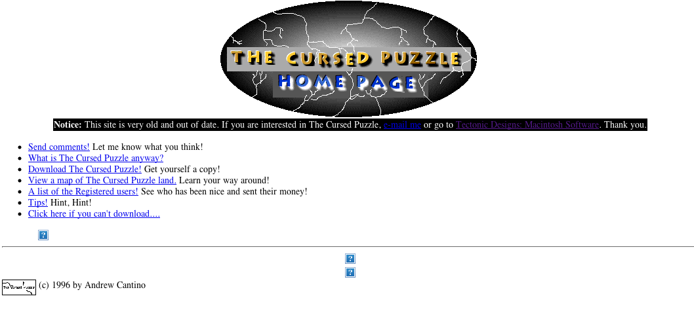

press esc + ↑ to zoom in, esc + ↓ to zoom out
The Cursed Puzzle is a game I wrote in Microsoft QuickBASIC in 1995-1996 on my Mac Plus. It is a GUI on top of an even older, text-only adventure game I'd previously written. Use the menu options to explore the world and find all of the lost puzzle pieces. My 14 year old self was thrilled to receive a couple $5 bills in the mail from people who purchased the full game, which was available via shareware archives.
This online virtual machine, running in JavaScript in your browser and fully simulating the hardware of a Mac Plus, is powered by James Friend's amazing emscripten port of the PCE MC68000 emulator.
Here also are a few images of The Cursed Puzzle's old website, originally hosted on Tripod (which was bought by Lycos).  